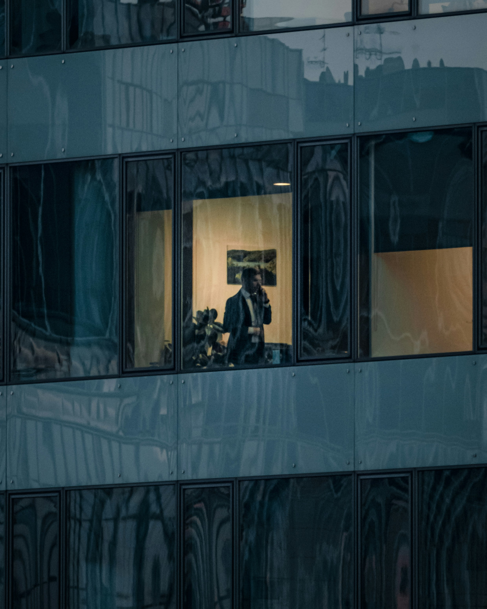
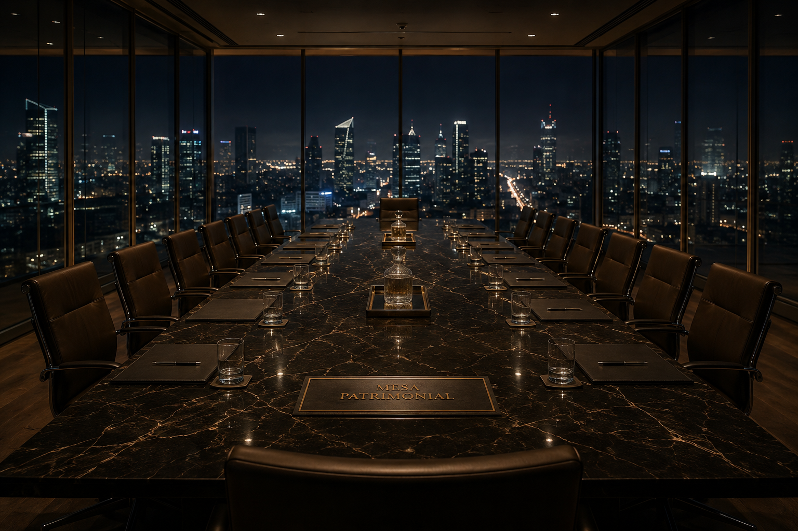

Estratégia de Posicionamento
2026 · Edição I
Valen Capital
Autonomia patrimonial
para quem o mercado
esqueceu.
Esta é a estratégia de posicionamento da Valen
Capital — a consultoria que devolve soberania a
famílias com patrimônio entre R$ 500 mil e R$ 10
milhões, integrando os Três Motores da Arquitetura
Patrimonial.
Documento de validação para
Davi Menegon
Maio · 2026
Valen · Capítulo 00 · Abertura
Fleway · Doc v2
Capítulo 00 · A frase fundadora
O que é a Trueline
A Trueline é a frase-verdade da marca:
a convicção central que organiza tudo o que a Valen diz,
vende e recusa. Não é um slogan de campanha — é a tese
que a marca defende, repetida íntegra em cada peça até
virar memória no cliente.
“
Mercado financeiro isolado
não constrói liberdade.
Trueline · Valen Capital
Onde aparece
Abertura · Brand Story · Coda — os três marcos do
documento.
Como funciona
Brand Anthem: dita sempre na íntegra, sem variação
de palavra.
De onde vem
Síntese editorial de uma fala recorrente de Davi
Menegon.
Capítulo 00 · Abertura
Fleway · 02
FLEWAY
FLEWAY
Estrutura
Sumário · 4 atos
Como construímos a
Valen Capital em quatro
movimentos.
Síntese do diagnóstico já validado. Tese de
posicionamento. Construção da marca. Marca pessoal
do Davi. Cada Ato resolve uma camada.
I
Ponto de Partida
Síntese do diagnóstico já validado: cliente,
dor e inimigo em uma página.
II
Tese
Onde a Valen joga, como é única, contra o quê,
qual a crença a derrubar.
III
Marca Valen
Mecanismo, promessa, provas, arquétipos,
história, voz, vocabulário.
IV
Marca Pessoal · Davi
Quem é Davi, sua tese pública, pilares,
sinergia com a empresa.
+
Ativação · 90 dias
Plano de execução e decisões travadas.
Capítulo 00 · Abertura
Fleway · 03

Ato I · Ponto de Partida
O Diagnóstico já foi feito.
Aqui está a
síntese que sustenta a estratégia.
O diagnóstico completo já foi apresentado e validado por
Davi em documento próprio. Este documento parte dele —
não o reabre. Em uma página: quem é o cliente, qual a
dor e quem é o inimigo.
01 · O Cliente
Everyday Millionaire, no Limbo.
Empresário, médico ou liberal que construiu o
patrimônio com as próprias mãos —
R$ 500k a R$ 10M. Locus de Controle
Interno: não quer rentabilidade, quer
agência. Grande demais para o
varejo, pequeno demais para o private.
02 · A Dor
Acumular sem arquitetura.
Três camadas: funcional — dinheiro
parado, sem integração ·
emocional — "Money-Vigilance", a
ansiedade do não-controle ·
filosófica — a injustiça do limbo:
tratado como iniciante apesar do que construiu.
03 · O Inimigo
O Sistema de Prateleira.
O modelo paga o profissional pela venda — então o
que chega ao cliente é o que rende comissão, não o
que resolve o caso dele. Não é má-fé do gerente: é
o incentivo fazendo o trabalho.
Davi passou 14 anos por dentro desse sistema antes
de sair para construir fora dele.
"Eu já fui do outro lado da mesa."
Ato I · Ponto de Partida
Fleway · 04
Ato II
Tese.
Onde a Valen joga. Como é única. Contra o quê.
Fleway · 09
FLEWAY
FLEWAY
10A · Ato II · Mapa do Mercado
build · 1 de 2
O mercado brasileiro divide-se em
cinco faixas patrimoniais —
cada uma com sua lógica de atendimento.
Até R$ 300k
Varejo Bancário
Produto de prateleira · gerente compartilhado
R$ 300k – R$ 500k
Varejo Premium
Mesmo produto · gerente exclusivo
R$ 500k – R$ 10M
Limbo Varejo-Private
Faixa sem categoria definida · grande para o
varejo, pequena para o private
R$ 10M – R$ 30M
Wealth Management
Bancas independentes · family office
compartilhado
Acima de R$ 30M
Private + Family Office
Estrutura dedicada · 360º real
A lacuna · Milhões de famílias brasileiras
nessa faixa. Atendidas por produto de prateleira com nome
rebuscado.
Ato II · Tese
Fleway · 10A
FLEWAY
FLEWAY
10B · Ato II · Território Primário
build · 2 de 2
Existe um limbo entre o
varejo bancário e o private de elite.
A Valen joga ali.
Até R$ 300k
Varejo Bancário
Produto de prateleira · gerente compartilhado
R$ 300k – R$ 500k
Varejo Premium
Mesmo produto · gerente exclusivo
R$ 500k – R$ 10M
Limbo · Valen Capital
Multifamily Office democratizado · Mesa Patrimonial
pessoal
R$ 10M – R$ 30M
Wealth Management
Bancas independentes · family office
compartilhado
Acima de R$ 30M
Private + Family Office
Estrutura dedicada · 360º real
A lacuna · Milhões de famílias brasileiras
nessa faixa. Atendidas por produto de prateleira com nome
rebuscado.
Ato II · Tese
Fleway · 10B
FLEWAY
FLEWAY
11 · Ato II · Onliness
Marty Neumeier · ZAG
O que é o Onliness
O Onliness Statement (Marty Neumeier ·
ZAG) é o teste da diferenciação radical: não
basta ser a melhor; é preciso ser
a única a fazer o que faz. Se a palavra
única não se sustenta, o posicionamento ainda
não está focado. A frase abaixo preenche a fórmula —
categoria, mecanismo, público, resultado e contra quem a
Valen joga.
A Valen Capital é a única
Consultoria de Arquitetura Patrimonial
que integra os Três Motores
— Mercado Financeiro, Crédito Inteligente e Economia
Real —
para
empresários e médicos com R$ 500k a R$ 10M,
garantindo soberania patrimonial e aceleração da
liberdade em 7 a 12 anos,
diferente das assessorias que ganham pelo produto que
vendem — não pelo cliente que servem.
Ato II · Tese
Fleway · 11
FLEWAY
FLEWAY
12A · Ato II · Quem ocupa o quê
build · 1 de 2
Cinco players plotados — e
um quadrante vazio
esperando ocupante.
Produto (transacional)
Arquitetura (consultivo)
Gestão Soberana
Gestão Reativa
Private de Elite
Quadrante da Soberania
Varejo com Gerente
Consultoria Boutique
BTG Wealth
XP Private
Adrian Carvalho
Arthur Lemos
Banco Tradicional
Valen Capital
Valen Capital
Não plotada ainda — quadrante superior direito vago
no mercado brasileiro.
Adrian Carvalho
"Engenharia Patrimonial". 3.000+ cases. Concorrente
direto na categoria.
Arthur Lemos
"Empreender Dinheiro" (ED). Mesmo modelo de
arquitetura patrimonial, narrativa de "investir como
dono".
BTG Wealth · XP Private
Marcas consolidadas, mas modelo de comissionamento
por produto. Limitam o cliente à sua prateleira.
Ato II · Tese
Fleway · 12A
FLEWAY
FLEWAY
12B · Ato II · Mapa Competitivo
build · 2 de 2
Onde estão os concorrentes — e
por que a Valen joga sozinha
no quadrante da soberania.
Produto (transacional)
Arquitetura (consultivo)
Gestão Soberana
Gestão Reativa
Private de Elite
Quadrante da Soberania
Varejo com Gerente
Consultoria Boutique
BTG Wealth
XP Private
Adrian Carvalho
Arthur Lemos
Banco Tradicional
Valen Capital
Valen Capital
Única no topo-direita: integra os
Três Motores (eixo arquitetura) e
cobra
fee-only com garantia dupla (eixo
soberania).
Adrian Carvalho
Faz arquitetura — vai à direita. Mas sem os Três
Motores nem garantia própria, não sobe à soberania.
Arthur Lemos
"Empreender Dinheiro": discurso de dono puxa à
direita, porém ainda monetiza por produto — fica na
faixa reativa.
BTG Wealth · XP Private
Gestão sofisticada sobe no eixo vertical, mas o
comissionamento por produto as
prende à esquerda.
Como ler o mapa
Horizontal · esquerda = vende
produto · direita = entrega arquitetura integrada.
Vertical · embaixo = refém do
produto da vez · em cima = soberana, fee-only.
O topo-direita exige as duas juntas. O
comissionamento trava os demais — por isso o
quadrante é da Valen.
Ato II · Tese
Fleway · 12B
FLEWAY
FLEWAY
12b · Ato II · Heatmap de Presença
AUSENTE
LEVE
MODERADA
VALEN
Onde cada player realmente atua. E onde a Valen
joga sozinha.
Banco
Tradicional
Itaú
Personnalité
XP
Private
BTG
Wealth
Adrian
Carvalho
Arthur
Lemos
Valen
Capital
Mercado Financeiro
Crédito Inteligente
Economia Real
Blindagem de Legado
Multifamily Democratizado
Mesa Patrimonial
Garantia Dupla (fee-only)
Ato II · Tese
Fleway · 12b
FLEWAY
FLEWAY
13 · Ato II · Big Domino
Russell Brunson · Epiphany Bridges
Se uma única crença mudar, toda a estratégia passa a
fazer sentido.
A Big Domino · A crença-pivô
"Liberdade patrimonial nasce quando os
Três Motores trabalham juntos."
As três crenças-trava do cliente — e como a Valen as
substitui.
01 · Falsa Crença
"Mercado financeiro sozinho me deixa rico."
A maioria acumula em CDB, fundos e ações esperando
que 30 anos resolvam. Não resolvem — inflação, custo
de vida crescente e falta de alavancagem corroem o
resultado.
Nova Crença
"Riqueza nasce da integração — não da concentração."
02 · Falsa Crença
"Dívida é sempre ruim."
O cliente que compra um imóvel à vista perde a
chance de comprar três com 30% de entrada cada. A
Valen chama isso de Dívida Boa —
alavancagem patrimonial para ativos.
Nova Crença
"Dívida boa não é dívida. É alavanca."
03 · Falsa Crença
"Só o que controlo diretamente é seguro."
Imóvel próprio parado, dinheiro só na poupança,
recusa de participações estruturadas. O resultado é
estagnação disfarçada de segurança.
Nova Crença
"O que multiplica é o que se estrutura."
Ato II · Tese
Fleway · 13
Ato III
A Marca.
A Valen como sistema, voz e território.
Fleway · 14
Ato III · Golden Circle
Toda marca que inspira
começa pelo Porquê.
O Golden Circle (Sinek) comunica de dentro para fora:
Porquê (a crença) →
Como (o método) →
O quê (a oferta). A Valen não vende
produto financeiro — vende uma convicção. O produto é a
última coisa que se diz.
Porquê · a crença
Ninguém deveria ficar refém do limbo.
Quem construiu patrimônio com as próprias mãos
merece soberania sobre ele — não ser tratado como
iniciante por um sistema que ganha vendendo
prateleira.
Como · o método
Arquitetura dos Três Motores.
Mercado, Crédito e Economia Real integrados na Mesa
Patrimonial. Fee-only com garantia dupla — o risco
fica com a Valen, não com o cliente.
O quê · a oferta
Consultoria de arquitetura patrimonial.
Para o Limbo R$ 500k–R$ 10M. Diagnóstico, Dossiê e
Mesa Patrimonial pessoal. O produto vem por último —
depois que a crença já convenceu.
Na prática
Onde usar: abertura de pitch, bio, vídeo
manifesto. · Como aplicar: toda
comunicação na ordem Porquê → Como → O quê. Jamais abrir
pelo produto.
Ato III · Marca Valen
Fleway · 14a
Ato III · Tipo de Avatar
O avatar não é "alta renda". É
o EMILLI.
Avatar é o retrato vivo de
uma única pessoa ideal — não de um
segmento. Toda peça da Valen fala com ele, validado no
Diagnóstico: o Everyday Millionaire que
construiu o que tem.
01 · Demografia
Capital construído.
35–55 anos · R$ 500k–R$ 10M · empresário, médico ou
liberal. Patrimônio pelo trabalho, não por herança.
02 · Psicografia
Locus de Controle Interno.
Não delega às cegas o que custou décadas. Não quer
rentabilidade — quer agência sobre
o próprio legado.
03 · Medos
Perder o que construiu.
"Money-Vigilance"; uma canetada política ou queda de
banco corroendo o legado; ser tratado como
iniciante.
04 · Desejos
Soberania e tempo.
Decidir com critério. Acelerar a liberdade de 30
para 7–12 anos. Sentir-se dono, não passageiro.
Na prática
Onde usar: copy, segmentação de tráfego,
briefing de conteúdo. ·
Como aplicar: escrever para uma pessoa (o
EMILLI); testar toda peça com "isto fala com ele?".
Ato III · Marca Valen
Fleway · 14b1
Ato III · Hero's Two Journeys
O cliente vive
duas jornadas ao mesmo
tempo.
Brunson: toda transformação tem a
jornada externa (o resultado tangível)
e a jornada interna (a mudança de
identidade). A Valen entrega as duas — só a externa,
sozinha, vira commodity.
Jornada Externa · o que conquista
De poupador passivo a arquiteto soberano.
Sai de acumular em prateleira esperando 30 anos.
Passa a operar Três Motores integrados na Mesa
Patrimonial — liberdade projetada em
7 a 12 anos, patrimônio defensável
e transferível.
Jornada Interna · quem ele se torna
De "alguém cuida disso" a "eu decido isto".
Sai da Money-Vigilance e da dependência do gerente.
Vira dono: decide com critério, dorme tranquilo, tem
orgulho de ter construído com método.
É a jornada que fideliza.
Na prática
Onde usar: Brand Story, cases, roteiro de
vídeo. · Como aplicar: todo
case mostra os dois eixos — o número (externo) e a virada de
identidade (interno). Nunca só o número.
Ato III · Marca Valen
Fleway · 14b2
Ato III · O Movimento
A Valen não tem clientes.
Tem um movimento.
Brunson — uma comunidade engajada se forma com três
elementos: um líder carismático, uma
causa maior que o serviço e uma
nova oportunidade (não uma versão
melhor da antiga).
01 · Líder carismático
Davi, o Herói Relutante.
Viveu o sistema por dentro por 14 anos e saiu para
construir o que faltava. Não é guru — é quem pagou o
preço e voltou com o mapa.
02 · A causa
"Saia do limbo."
Devolver soberania a quem o mercado esqueceu. A
bandeira é maior que a consultoria — junta-se a um
movimento por um propósito, não por um produto.
03 · Nova oportunidade
Arquitetura, não "investir melhor".
Não é a prateleira aprimorada — é uma categoria
nova: a Mesa Patrimonial dos Três Motores. Mudança
de veículo, não de velocidade.
Na prática
Onde usar: manifesto, bio, abertura de
evento e da comunidade. ·
Como aplicar: falar da causa antes do
serviço; recrutar para um movimento, não vender uma
consultoria.
Ato III · Marca Valen
Fleway · 14b3
Ato III · Primal Code
Os 7 códigos primais que
fazem a Valen virar crença.
Hanlon — marcas que viram sistema cultural têm sete
elementos. A Valen já tem todos; aqui ficam
nomeados e travados para o Brand Book.
01História da Criação
"O Fantasma e a Mesa" — o não-compete, o deserto, a
revelação de que
mercado financeiro sozinho não constrói
liberdade.
02Credo
A Trueline:
"Mercado financeiro isolado não constrói
liberdade."
Dita sempre na íntegra.
03Ícones
O ícone dos Três Motores (3
círculos sobrepostos) · o café Espírito Santo · o
Dossiê de Arquitetura.
04Rituais
Diagnóstico de 90 min · caixa de boas-vindas com
carta-manifesto · Círculo dos Três Motores
trimestral.
05Palavras Sagradas
Arquitetura Patrimonial · Mesa Patrimonial ·
Soberania · Dívida Boa · Limbo Varejo-Private.
06Pagãos / Não-crentes
O Sistema de Prateleira: o
comissionamento por produto que ganha vendendo, não
servindo.
07Líder
Davi Menegon — o Sábio que ensina e o Mago que
transforma.
Na prática
Onde usar: todo o sistema de marca.
· Como aplicar: nenhuma peça
pode contradizer um dos 7; o Brand Book trava cada um.
Ato III · Marca Valen
Fleway · 14b4
Ato III · Costly Signals
Prova que custa caro é
prova que convence.
Sinalização cara: sinais que
só quem fala a verdade pode pagar. A
Valen assume custo e risco que um vendedor de prateleira
jamais assumiria — e é isso que torna a promessa crível.
01 · O preço de sair
Dois anos parado para sair do sistema.
Davi captava em escala no varejo — R$ 50 milhões em
6 meses na XP. Para construir fora do modelo de
prateleira, aceitou um não-compete de 2 anos: sem
atuar, sem a receita da carteira que tinha. A conta
da convicção ele pagou em silêncio.
02 · Recusar a comissão
Fee-only: abre mão da receita da indústria.
O comissionamento por produto sustenta toda
assessoria de prateleira. A Valen renuncia a ele e
cobra apenas honorário do cliente. Abrir mão da
receita mais fácil do mercado é o que torna a
independência verdadeira.
03 · Garantia dupla
"O risco fica todo comigo."
Devolução do setup (R$ 12k) e da taxa de gestão se a
carteira não bater o CDI. Quem vende prateleira
nunca assinaria isso: só quem confia no próprio
método pode pagar essa garantia.
Na prática
Onde usar: página de oferta, fechamento,
objeção de confiança. ·
Como aplicar: todo claim vem acompanhado do
custo que a Valen assume por ele.
Ato III · Marca Valen
Fleway · 14b5
FLEWAY
FLEWAY
14b · Ato III · De / Para
A transformação que a Mesa entrega
O cliente entra como poupador passivo. Sai como
arquiteto soberano.
De · onde está hoje
Poupador
Passivo
Acumula em CDB, fundos, ações — espera 30 anos
resolverem.
Imóvel próprio parado, sem liquidez, "porque é
seguro".
Dívida tratada como tabu — nunca como alavanca.
4 profissionais (contador, advogado, corretor,
assessor) sem visão do todo.
Depende do gerente exclusivo do banco.
Vigilância financeira crônica —
"Money-Vigilance".
→
Para · onde a Valen leva
Arquiteto
Soberano
Opera 3 motores integrados —
Financeiro, Crédito, Economia Real.
Imóvel próprio é só uma peça — o resto gera
fluxo e proteção.
Dívida boa compra ativos —
alavanca multiplicada por arquitetura.
Uma Mesa Patrimonial conduz
contador, advogado e investimentos.
Davi atende pessoalmente · garantia dupla ·
fee-only.
Independência em 7 a 12 anos —
não em 30.
Ato III · Marca Valen
Fleway · 14b
FLEWAY
FLEWAY
15A · Ato III · Três Motores
build · 1 de 2
A Valen opera
três motores patrimoniais —
cada um com lógica própria.
01
Mercado Financeiro
O capital em movimento
Alocação consultiva (fee-only) em renda fixa,
fundos, equities e estruturados. Sem comissionamento
por produto. Asset própria de renda fixa (NETS) com
garantia dupla: devolução do setup
+ devolução da taxa de gestão se não bater CDI.
02
Crédito Inteligente
A alavancagem estruturada
Crédito para comprar ativos, não consumo.
Dívida Boa. Consórcio estruturado,
financiamento imobiliário a 30%, holding com
capacidade de crédito. Modelo: pagar a dívida com o
próprio rendimento do ativo adquirido.
03
Economia Real
O lastro tangível
Agronegócio, imóveis para renda, energia solar.
Não imóvel próprio. Ativos que
geram fluxo, têm proteção fiscal específica e
funcionam há séculos. Davi opera o Motor 03 na
própria pele — fazenda Espírito Santo Café.
Quando os Três Motores trabalham juntos, surge a
Mesa Patrimonial — a integração que famílias
com R$ 30M+ têm há décadas, agora democratizada para o
Limbo.
Ato III · Marca Valen
Fleway · 15A
FLEWAY
FLEWAY
15B · Ato III · Mecanismo Único
build · 2 de 2
Não é um produto.
É um sistema.
01
Mercado Financeiro
O capital em movimento
Alocação consultiva (fee-only) em renda fixa,
fundos, equities e estruturados. Sem comissionamento
por produto. Asset própria de renda fixa (NETS) com
garantia dupla: devolução do setup
+ devolução da taxa de gestão se não bater CDI.
02
Crédito Inteligente
A alavancagem estruturada
Crédito para comprar ativos, não consumo.
Dívida Boa. Consórcio estruturado,
financiamento imobiliário a 30%, holding com
capacidade de crédito. Modelo: pagar a dívida com o
próprio rendimento do ativo adquirido.
03
Economia Real
O lastro tangível
Agronegócio, imóveis para renda, energia solar.
Não imóvel próprio. Ativos que
geram fluxo, têm proteção fiscal específica e
funcionam há séculos. Davi opera o Motor 03 na
própria pele — fazenda Espírito Santo Café.
Quando os Três Motores trabalham juntos, surge a
Mesa Patrimonial — a integração que famílias
com R$ 30M+ têm há décadas, agora democratizada para o
Limbo.
Ato III · Marca Valen
Fleway · 15B
FLEWAY
FLEWAY
Ato III · Sentimentos-alvo
Mix emocional · Matriz de Hormozi
Antes da promessa:
o que o cliente sente
quando a Mesa Patrimonial entra em funcionamento.
01 · Alívio
Sai do "Money-Vigilance".
A ansiedade crônica de monitorar caixa, banco e
dívida. Quando a arquitetura entra, o cliente para
de ler manchete tributária com medo. Dorme.
02 · Soberania
Locus de controle interno.
Decide com critério, não por orientação do gerente.
Sabe onde o dinheiro está, por que está ali, e o que
muda na segunda-feira.
03 · Pertencimento
Mesa, não prateleira.
Sente-se parte de um grupo seleto que opera com
inteligência de Multifamily Office. O status que
antes era exclusivo de famílias R$ 30M+.
04 · Orgulho
Construiu com método.
Não dependeu de sorte, de gerente premium ou de
produto da vez. O patrimônio cresceu por arquitetura
— repetível, defensável, transferível.
Alívio é funcional.
Soberania, pertencimento e orgulho são
identitários.
A Valen vende os quatro juntos — e a Promessa, a seguir,
embala os dois eixos.
Ato III · Marca Valen
Fleway · 15c
FLEWAY
FLEWAY
16 · Ato III · Promessa
Dream Outcome Dual · Hormozi
Toda promessa tem
dois eixos.
A Valen entrega os dois.
01 · O que acontece
Conquiste sua liberdade patrimonial em
7 a 12 anos através da Arquitetura dos Três
Motores.
O cliente médio leva 30 anos. A Valen entrega em 7 a
12. A diferença não é velocidade — é arquitetura.
Três motores juntos rendem mais que o melhor motor
sozinho.
Prova · Case 2,7M → 5,7M em arquitetura integrada ·
111% projetado em 30 dias
02 · O que se sente
Deixe de ser passageiro do varejo bancário e assuma
o controle do seu legado com a inteligência
de um Multifamily Office pessoal.
A diferença não é só de retorno. É de identidade. O
cliente sai de "alguém cuida disso pra mim" para "eu
decido isso aqui". Sai de passageiro. Vira dono.
Sentimentos-alvo · Alívio · Soberania ·
Pertencimento
Ato III · Marca Valen
Fleway · 16
FLEWAY
FLEWAY
17 · Ato III · Prova
Costly Signaling
A Valen não é uma promessa.
É um track record.
Trajetória
14anos
De mercado. Bradesco Seguros · Itaú Personal ·
Santander Select · XP. Sai do varejo para construir
o sistema que o varejo não permite. Hoje, fundador
da Valen.
Alcance
1.000+
Pessoas impactadas em 14 anos — banco, assessoria,
consultoria. Davi tem fila de indicação desde antes
da Valen existir.
Captação Inaugural
R$ 50mi
Em 6 meses, ao entrar na XP em 2020. Prêmios
individuais. Confirmação prática —
clientes que escolheram Davi acompanharam
Davi.
Arquitetura na Própria Pele
1fazenda
Espírito Santo Café. Davi opera o Motor 03 (Economia
Real) na própria vida — agronegócio em terra
capixaba.
A consultoria que se vende e se
autoaplica.
Credenciais · SUSEP · CEA · MBA
Finanças/Investimentos/Banking · NETS (asset própria de
renda fixa · XP/BTG)
Garantia dupla · devolução do setup R$ 12k · devolução
da taxa de gestão se não bater CDI ·
"o risco fica todo comigo"
Ato III · Marca Valen
Fleway · 17
FLEWAY
FLEWAY
18 · Ato III · Personalidade
Mark & Pearson · Jung
A Valen tem dois arquétipos.
Um ilumina. O outro
transforma.
70%
O Sábio
O que ensina · clarifica · desvenda
O Sábio é o mentor que entende o sistema por trás da
cortina. É Gandalf — não o que faz, mas o que
mostra. A Valen ensina o cliente a virar arquiteto
do próprio patrimônio.
"Eu já fui do outro lado da mesa. O sistema de
comissionamento de produtos acaba ferindo muito os
clientes."
— Davi · Sessão 4 · entrevista Fleway
Ego · Independência · Verdade · Conhecimento
30%
O Mago
O que transforma · acelera · opera o invisível
O Mago converte realidade. A Valen reduz 30 anos
para 7 a 12 — engenharia oculta dos Três Motores,
não mágica.
"Uma cliente saiu de R$ 2,7 milhões pra R$ 5,7
milhões. São 111% de crescimento projetado em 30
dias."
— Davi · case ancorado · entrevista
Fleway
Alma · Poder · Mudança · Metamorfose
Ato III · Marca Valen
Fleway · 18
FLEWAY
FLEWAY

Ato III · Brand Story
"Eu já fui do outro lado da mesa.
O sistema de comissionamento de produtos
acaba ferindo muito os clientes."
Davi Menegon
Fundador · Valen Capital · Vitória / ES
19 · A Jornada
Por que a Valen existe.
01 · 2008-2020
O Mundo Comum — 14 anos dentro do sistema.
Bradesco Seguros. Itaú Personal. Santander
Select. XP. Davi subiu cada degrau que o
mercado mandou. Captou
R$ 50 milhões em 6 meses na
XP em 2020. Ganhou prêmios. Viu, por dentro,
como o comissionamento fere o legado.
02 · 2021
O Chamado — o escritório migrou. Davi ficou.
Em 2021, o escritório onde atuava saiu da XP
rumo ao BTG. Davi escolheu permanecer na XP.
O preço foi um
não-compete de 2 anos com o
próprio código — um "fantasma" do mercado
que ajudou a construir.
03 · 2022
O Abismo — o ano que testou tudo.
A perda da primeira filha,
Valentina — 6 dias de vida.
Uma cafeteria em São Paulo que faliu. Uma
multa de R$ 3 milhões que tentaram cobrar do
ex-escritório. Davi sustentado pela fé e por
Isabela.
04 · 2023-24
A Revelação — o que o silêncio mostrou.
No silêncio do não-compete, Davi entendeu:
mercado financeiro sozinho não é
suficiente. Faltava a arquitetura. O empresário e o
médico brasileiro estavam órfãos: grandes
demais para o varejo, ignorados pelos bancos
de elite.
O Limbo Varejo-Private.
05 · 2025-hoje
A Valen Capital — a mesa que faltava.
A BK Solutions tinha origem nas esposas:
Bela (Isabela) +
Karen (esposa do ex-sócio).
Com a saída do sócio, BK perdeu propósito.
Renasceu como
Valen Capital: a mesa onde
Mercado Financeiro, Crédito Inteligente e
Economia Real conversam.
FLEWAY
FLEWAY
19b · Ato III · Manifesto
O Fantasma e a Mesa · roteiro 2026
O mundo financeiro ficou barulhento. Em pouco tempo,
"alta renda" virou rótulo, "private" virou nome de
produto, e quem construiu o que tem ficou no
meio — grande demais para o varejo, pequeno demais para
o private.
Foram 14 anos subindo os degraus que o mercado
mandou. Bradesco. Itaú. Santander. XP. Vi os números
crescerem, bati metas de milhões, ganhei prêmios.
Por dentro, algo não fechava: o sistema de
comissionamento ferindo o legado de quem confiava em
mim.
Em 2021, o escritório onde eu atuava migrou para o
BTG. Eu fiquei na XP, com não-compete de dois anos.
Um fantasma no mercado que eu mesmo ajudei a
construir.
Em 2022, perdi minha primeira filha —
Valentina, seis dias de vida. Uma
cafeteria em São Paulo faliu. Uma multa de R$ 3
milhões caiu na minha mesa. Fé e Isabela me
sustentaram.
No silêncio do deserto, ficou claro:
mercado financeiro sozinho não constrói
liberdade. Ele é uma peça. Faltava arquitetura. O empresário
e o médico brasileiros estavam órfãos — entre o
varejo que oferece prateleira e o private que cobra
pedigree.
Voltei para construir sistemas. Mercado Financeiro,
Crédito Inteligente, Economia Real — os
Três Motores trabalhando juntos.
Uma mesa onde o contador, o advogado, o corretor e o
assessor conversam.
Mesa Patrimonial.
Hoje a Valen não vende produto. Vende sistema. Não
promete velocidade. Entrega arquitetura. Para quem
cabe.
— Davi Menegon · Manifesto Valen · destilação Fleway 2026
Ato III · Marca Valen
Fleway · 19b
FLEWAY
FLEWAY
20 · Ato III · Tom de Voz
Brand Voice Matrix · 4 modos
Quatro modos.
Cada um para
um momento específico.
Régua geral · Direto. Respeitoso.
Professoral. Seguro. · Intensidade 7/10. · Confronta o
sistema, nunca o cliente.
01 · Diagnóstico
O modo frio e preciso.
Quando · reunião comercial · post de análise ·
dossiê
"Pelos dados, o seu tradeoff atual é X. Os dados
mostram Y. Para esse perfil, o caminho ótimo é Z."
Nunca soa como
"Eu acho que talvez você devesse considerar..."
02 · Tese
O modo firme, polarizado, protetor.
Quando · hooks · conteúdo de topo · reels de
posicionamento
"Produto financeiro não é arquitetura. O sistema de
comissionamento fere o seu legado."
Nunca soa como
"É preciso refletir sobre as nuances do modelo de
distribuição vigente."
03 · Case
O modo humano, empático, inspirador.
Quando · prova social · bastidores · depoimentos
"Um casal que atendemos acreditava que precisava de
30 anos. Em 30 dias, redesenhamos o futuro deles."
Nunca soa como
"Análise de retorno: 111% em projeção anualizada."
04 · Convite
O modo autoritário, escasso, seletivo.
Quando · bio · landing · encerramento de reel
"Não atendemos iniciantes. Se você possui o perfil
de arquiteto e quer soberania, o próximo passo é o
diagnóstico."
Nunca soa como
"Aproveite! Vagas limitadas! Garanta a sua agora!"
Ato III · Marca Valen
Fleway · 20
FLEWAY
FLEWAY
FLEWAY
FLEWAY
20b · Ato III · Voz · 8 dimensões
Deve / não deve · Brand Voice Matrix
Oito dimensões de voz — e o que nunca deveria
sair pelas mãos da Valen.
| Dimensão |
Como a Valen soa
|
Como a Valen jamais soa
|
| Séria |
Linguagem de decisão e consequência. Fala de
risco, critério, prioridade. Soa como mesa
de decisão, não como palco.
|
"Revolução", "transformação", "o futuro
chegou", "evento histórico".
|
| Direta |
Frases curtas. Afirmações claras. Responde
objetivamente "o que muda na segunda-feira".
|
Textos longos e abstratos. Aula acadêmica
antes do ponto.
|
| Antihype |
Troca promessa por método. Mostra limites e
condições. Prova com contexto, não com
adjetivo.
|
"Resultados garantidos", "fique rico
rápido", "7 dias para mudar tudo".
|
| Premium |
Simples e sofisticada. Menos adjetivo, mais
critério. Estética limpa. Autoridade
silenciosa.
|
Agressiva, espalhafatosa, cheia de gatilhos
e escassez falsa.
|
| Executiva |
Vocabulário de governança e operação:
dossiê, cadência, garantia, baseline, ROI,
mesa.
|
Listas de "10 produtos quentes do mês",
"dicas e hacks", jargão de assessor de
varejo.
|
| Exigente |
Cobra padrão. Coloca régua para entrar (R$
500k+). Ensina dizendo "como fazer certo" e
"o que não fazer".
|
Conivente com improviso. "Cada um faz do seu
jeito". Vende para qualquer um.
|
|
Didática sem ser professoral
|
Explica com frameworks simples (Três
Motores, Mesa Patrimonial), sempre
conectando à prática.
|
Excesso de teoria, jargão técnico,
referências que não viram rotina do cliente.
|
| Confiável |
Transparência: o que é, o que não é, para
quem é, para quem não é. Cases com baseline,
ação, métrica e limite.
|
Ambígua. Evita falar de risco e limites. Usa
case como vitrine, sem trade-offs.
|
Ato III · Marca Valen
Fleway · 20b
Ato III · Tom de Voz & Linguagem
Tom é como soa. Linguagem é
a mecânica da frase.
Os 4 modos e as 8 dimensões já definem o
tom. Aqui a
linguagem aplicada: como a frase é
construída, como abre e fecha, e o que muda em cada
canal — para soar Valen mesmo na mão de quem nunca leu o
deck.
01 · Mecânica da frase
Decisão primeiro.
Frases curtas. Afirmação > pergunta. A conclusão
vem antes da explicação. Número sempre com contexto
e limite — nunca solto.
02 · Aberturas & fechos
Abre por tese, fecha por consequência.
Abre com uma tese ou um caso — nunca com saudação ou
aquecimento. Fecha com a consequência ou um convite
seletivo. Jamais com hype ou escassez falsa.
03 · Por canal
Mesmo núcleo, formato diferente.
Reel: 1 tese, gancho em 7s.
Carrossel: 1 ideia por quadro.
Proposta: governança, baseline,
garantia. DM: consultivo, nunca
vendedor.
Na prática
Onde usar: toda produção textual — post,
roteiro, proposta, e-mail. ·
Como aplicar: checklist antes de publicar —
curto? decisão primeiro? sem hype? soa como mesa de decisão,
não como palco?
Ato III · Marca Valen
Fleway · 20c
FLEWAY
FLEWAY
21 · Ato III · Léxico Tribal
Sacred Words · Hanlon
Toda tribo tem
palavras-código.
E palavras-veneno.
Davi repete "arquitetura patrimonial" ~25 vezes por
reunião. A Valen herda essas palavras como ativo
distintivo. A lista abaixo é o léxico tribal — o que
repetir, o que jamais usar.
Palavras-código · Repetir
em 80% dos conteúdos
-
Arquitetura Patrimonialmétodo central
-
Três Motoresmecanismo único
-
Mesa Patrimonialo estado que se entrega
-
Soberania Patrimonialestado emocional-alvo
-
Limbo Varejo-Privateterritório
-
Multifamily Democratizadocategoria
-
Dívida Boaalavanca patrimonial
-
Blindagem de Legadoproteção sucessória
-
Diagnóstico Patrimonialritual de entrada
-
Dossiê de Arquiteturaproduto-prova
Palavras-veneno · Jamais
usar
-
Prateleira→ "Arquitetura"
-
Comissão→ "Fee-only"
-
Assessor genérico→ "Consultor de Arquitetura"
-
Produto isolado→ "Motor único, sem mesa"
-
Gerenteevitar completamente
-
Tigrinhoevitar completamente
-
Betevitar completamente
-
Fique rico rápidoevitar completamente
-
Alavancagem solta→ "Alavancagem patrimonial"
-
Vermelho como cor→ associa-se a perda
Brand Anthem · "Saia do limbo financeiro."
Usado como encerramento de reel · assinatura de
publicação · frase de CTA
Ato III · Marca Valen
Fleway · 21
Ato IV
Davi.
A pessoa pública que acelera a marca.
Fleway · 22
FLEWAY
FLEWAY
23 · Ato IV · Árvore da Reputação
Indio da Costa · Personal Branding
A marca pessoal de Davi se sustenta em
três camadas.
Copa · o que o público vê
Autoridade técnica
SUSEP · CEA · MBA Finanças · NETS asset
própria
Mecanismo proprietário
Arquitetura dos Três Motores · 14 anos ·
1.000+ pessoas atendidas
Tese pública
Multifamily Office Democratizado para o
Limbo R$ 500k–R$ 10M
Voz do mentor
Sábio que ensina + Mago que transforma ·
ref.: Gandalf
Tronco · o que conecta
"Tirar famílias do limbo financeiro.
Devolver soberania a quem o mercado
esqueceu."
Raízes · o que sustenta
Família
Isabela (esposa) · Antonella e Clara ·
Valentina (perdida em 2022)
Fé
Cristão · "o que fez seguir foi a fé em
Deus"
Origem
Mãe enfermeira · pai seguradora · o
contra-conservador
Experiência ferida
Bradesco Seguros · Itaú Personal · Santander
Select · XP · 2 anos de não-compete ·
cafeteria SP · multa R$ 3M tentada
Ato IV · Marca Pessoal
Fleway · 23
Ato IV · Attractive Character
Davi não é "mais um assessor".
É o
personagem que carrega a comunicação.
Toda marca pessoal forte tem um
Attractive Character — o rosto em quem
o público confia. Não é fabricar persona: é destilar a
história real de Davi em quatro alavancas de conexão. A
identidade que ele encarna é o
Herói Relutante: não se vendeu como
guru — a jornada o forçou a construir o sistema que
faltava.
01 · Backstory
A ferida que conecta.
14 anos dentro do sistema, o não-compete "fantasma",
a perda da Valentina, a multa de R$ 3M, a fé que
sustentou. A origem não é currículo — é o porquê de
existir.
02 · Parábolas
Ensina por história.
Cada conceito entra por um caso: o R$ 2,7M → R$
5,7M, "eu já fui do outro lado da mesa". A lição vem
embrulhada em narrativa, nunca em jargão solto.
03 · Falhas
O que o humaniza.
A cafeteria que faliu, o ano que testou tudo, o
recomeço. Davi não é o guru perfeito — a
vulnerabilidade controlada é o que torna a
autoridade crível.
04 · Polaridade
O que filtra.
Toma posição: a Lista dos Nãos, "não atendo
iniciante", confronta o sistema de prateleira.
Repele de propósito para atrair quem cabe.
Na prática
Onde usar: Brand Story, bio, primeiro
contato, abertura de vídeo. ·
Como aplicar: toda peça abre por backstory
ou parábola; a polaridade vive na bio e no CTA; jamais o
"guru perfeito" — a falha sempre presente, em dose
controlada.
Ato IV · Marca Pessoal
Fleway · 23b
Ato IV · Como Davi se Apresenta
Como Davi se veste e fala.
Imagem e fala são sinalização — comunicam quem ele é
antes do conteúdo. A regra é
código de fundo: repetir os mesmos
sinais até virarem identidade. Homem em autoridade
madura reduz estímulo e aumenta sobriedade —
previsibilidade vira confiança.
Veste · sim
Sobriedade premium.
Camisa social lisa (branca, navy ou cinza-claro),
sem gravata, colarinho aberto — ou tricô premium
gola redonda em grafite/navy. Tom sobre tom. Relógio
discreto. Tecido firme que aguenta repetição: é
infraestrutura, não figurino.
Veste · não
O que mata a autoridade.
Terno engravatado (lê "gerente de banco" — o
inimigo). Casual/streetwear demais. Estampa, logo
visível, cor vibrante.
Vermelho (anti-vocabulário = perda). Trocar
o look a cada vídeo — destrói a previsibilidade.
Fala · sim
Quem senta na mesa de decisão.
Cadência pausada e firme. Abre por tese ou caso,
fecha por consequência. Afirma, não pergunta.
Vocabulário da Mesa: arquitetura, soberania, dossiê.
Pausa no ponto-chave. Tom 7/10 — confronta o
sistema, nunca o cliente.
Fala · não
O que soa varejo.
Hype, urgência, "garantido", "rápido". Jargão de
assessor ("produto quente", "dica"). Aquecimento
longo antes do ponto. Tom de palco/guru, empolgação
fabricada, gíria que quebra o premium.
Na prática · onde e como
Onde: todo vídeo, foto, live, reunião e
foto de perfil. · Como: trave
2–3 looks fixos e repita; cenário-âncora sempre o mesmo
(livros · Dossiê · café Espírito Santo); modo
Sábio sentado e didático para tese (70%) ·
modo Mago na fazenda, prova viva, para
transformação (30%); mesma abertura e mesmo fecho, como
ritual.
Ato IV · Marca Pessoal
Fleway · 23c
Ato IV · Referências de Posicionamento
Com quem Davi se parece — e
quem produz como ele deveria.
Não é copiar persona — é copiar o
princípio: ocupar um lugar, não
disputar atenção. O modelo de Davi é o
Founder-Expert (qualifica, não expande)
operando como o Mago maduro — quem
deixa de ensinar técnica e passa a organizar a visão de
mundo.
O modelo
Founder-Expert, não Creator.
O Creator vive de produzir volume para expandir
alcance. O Expert vive da imagem que construiu e usa
conteúdo para qualificar. Davi é
Expert: 4–6 diagnósticos/mês, escassez verdadeira.
O espelho
Imagem > mídia.
Autoridade por previsibilidade: o registro sóbrio e
consequente no estilo Tony Robbins / Flávio Augusto;
o vídeo executivo cândido e curto no estilo Jon Gray
(Blackstone).
O conteúdo registra uma posição já consolidada
— não busca validação.
A produção
Tese, não opinião.
Liderança de pensamento > liderança de opinião.
Uma tese densa por semana vale mais que cinco posts
reativos. Davi não comenta notícia — traduz notícia
em pilar.
Na prática
Onde usar: direção de conteúdo e calendário
editorial. · Como aplicar: 1
tese/semana de alta densidade; repetir códigos até virarem
identidade; sustentar posição no tempo sem reagir a todo
estímulo — ocupar o lugar do Mago maduro.
Ato IV · Marca Pessoal
Fleway · 23d
FLEWAY
FLEWAY
24 · Ato IV · Tese Editorial
Content Niche · Schaefer
Toda autoridade tem uma tese — e
pilares que a sustentam.
"Mercado financeiro isolado não constrói liberdade.
Três motores constroem.
E é isso que Davi traduz em público — para quem cabe."
Tese editorial · Brand Anthem destilado da fala
recorrente do Davi · Fleway 2026
Os 3 pilares de conteúdo para os próximos 12 meses.
01 · O Motor de Crédito
Alavancagem Inteligente.
Dívida boa compra ativos. Por que o consórcio é
alavanca, não consumo. Por que três imóveis com 30%
de entrada batem um à vista. Por que financiamento
estruturado é defensável.
Formatos · carrossel diagramático · reel de case ·
calculadora simples
02 · O Escudo Fiscal
Blindagem de Legado.
A Reforma do ITCMD é agora. Sucessão, holding,
proteção patrimonial intergeracional. Janela
temporal de 2026: especialistas em tributária ainda
aprendendo a aplicar a nova base de cálculo.
Formatos · série 7 reels · webinar evergreen ·
checklist download
03 · A Mentalidade do Dono
Psicologia da Soberania.
A diferença entre cliente passivo do banco e
arquiteto patrimonial. Money-Vigilance. Agência.
Decisão. O que o mercado financeiro brasileiro não
ensina — porque não vende.
Formatos · storytelling pessoal · bastidor · tese
provocativa
Lente · Davi não comenta notícia. Traduz notícia em pilar.
Ato IV · Marca Pessoal
Fleway · 24
FLEWAY
FLEWAY
24B · Ato IV · O que muda
Sete deslocamentos estruturais
Sete deslocamentos que mudam tudo — entre o
cliente que entra e o arquiteto que sai.
Cada linha é um deslocamento que a Mesa Patrimonial
opera no dia a dia. Não é discurso — é o que muda quando
o cliente para de comprar produto e começa a operar
arquitetura.
Eixo
Como é hoje · mercado
Como passa a ser · Valen
Velocidade
Independência projetada em torno de 30 anos — média
do mercado financeiro tradicional.
Independência em 7 a 12 anos via
engenharia dos Três Motores integrados.
Decisão
Produto isolado — escolha entre opções da prateleira
atual do banco ou da corretora.
Sistema integrado — cada decisão pesa contra
Mercado, Crédito e Economia Real ao mesmo tempo.
Crédito
Tabu — dívida vista como vilã, financiamento como
último recurso, consórcio como engodo.
Dívida Boa como alavanca —
consórcio, financiamento e holding usados para
multiplicar ativo.
Imóvel próprio
Centro do patrimônio — concentração emocional e
financeira em um único ativo ilíquido.
Peça da arquitetura — uma posição entre várias,
dimensionada pela função, não pela vontade.
Equipe
Quatro silos — contador, advogado, corretor e
assessor falam separados, raramente entre si.
Mesa Patrimonial — os quatro
orquestrados por Davi em uma única decisão por
cliente.
Comissionamento
Prateleira — assessor ganha pelo produto que vende,
não pelo cliente que serve.
Fee-only — remuneração
transparente, garantia dupla de devolução se não
bater CDI.
Indicador
Rentabilidade nominal — % ao ano vs CDI, comparações
sem ajuste de risco e horizonte.
Aceleração temporal — quantos anos
a arquitetura subtrai do caminho até a liberdade.
Ato IV · Marca Pessoal
Fleway · 24B
FLEWAY
FLEWAY
25 · Ato IV · Polaridade
The Power of Saying No
O que a Valen não faz — e por quê.
Toda marca forte tem uma lista pública do que recusa.
Esta é a lista de Davi — extraída diretamente do
diagnóstico. Funciona como filtro de cliente e como
prova de coerência arquetípica.
01
Não trabalho com quem tem menos de R$ 100k para
investir.
Essa pessoa precisa primeiro formar reserva. A
Arquitetura dos Três Motores começa depois.
Posso te indicar o caminho — mas não a
porta.
02
Não opero renda variável especulativa, opções ou
day trade.
Esses ativos ganham na volatilidade, perdem na
disciplina. A Valen trabalha com ativos que
funcionam há séculos — agronegócio,
imóveis estruturados, energia solar.
03
Não me associo a Tigrinho, Bet, "fique rico rápido"
ou ativos não validados.
Não como crítica moral — como crítica matemática.
O risco assimétrico é contra o cliente, não a
favor.
04
Patrimônio não é aposta. É arquitetura.
Quem busca multiplicador rápido procura o
concorrente errado.
A Valen acelera 30 anos para 7 ou 12 — em vez
dos 30 do mercado tradicional.
05
Atendo arquiteto, não iniciante.
O cliente Valen é o EMILLI — quem construiu o que
tem com as próprias mãos e quer agência sobre o que
construiu.
A Valen é uma mesa — não uma porta de
entrada.
Ato IV · Marca Pessoal
Fleway · 25
FLEWAY
FLEWAY
26 · Ato IV · Sinergia
Personal Brand Acceleration
Como a marca pessoal de Davi acelera a marca
Valen.
01 · Pessoa
Pai. Marido. Capixaba. Cristão.
A pessoa antes da empresa. Esposo de Isabela. Pai de
Antonella e Clara. 14 anos de mercado financeiro
carregando o que importa.
02 · Autor
Tese editorial pública.
3 pilares (Alavancagem · Blindagem · Soberania). Tom
7/10. Frequência semanal. Plataforma: Instagram
profissional + LinkedIn.
03 · Método
Arquitetura dos Três Motores.
O que Davi escreve, ele aplica. A repetição autoral
cria reconhecimento. O cliente chega ao primeiro
contato já consciente do método.
04 · Diagnóstico
A porta de entrada.
90 min. Dossiê personalizado. Davi pessoalmente.
Escassez verdadeira: 4-6 diagnósticos/mês —
capacidade real.
05 · Arquitetura Completa
Setup R$ 18k+ · Fee de gestão.
Onboarding ritualizado (caixa + carta-manifesto +
café Espírito Santo + Mesa Patrimonial).
Acompanhamento trimestral.
O autor cria memória. A empresa entrega sistema.
Sem
autor, vira commodity. Sem empresa, vira influencer.
Juntos: autoridade defensável.
Ato IV · Marca Pessoal
Fleway · 26
Ato III · Direção de Identidade Visual
A identidade visual ainda
será construída — aqui está
o brief.
A Valen ainda não tem sistema visual próprio. Este slide
não mostra um — define
o que ele precisa expressar, a partir
da estratégia. O sistema final (logo, paleta,
tipografia, grafismos) é entregável do
Brand Book, construído sobre esta
direção.
01 · Princípio
Autoridade silenciosa.
Sobriedade, não barulho. Premium é critério, não
estética espalhafatosa. O oposto visual do varejo e
do guru — calma, espaço, peso.
02 · Símbolo proprietário
O ícone dos Três Motores.
Três círculos sobrepostos = a Mesa Patrimonial. É o
ativo visual a desenhar e registrar — a assinatura
que torna a marca reconhecível sem o nome.
03 · Território
Arquitetura e mesa de decisão.
Solidez patrimonial. Tipografia com autoridade.
Fotografia de cenário real (dossiê, fazenda,
estúdio), nunca banco de imagem genérico.
04 · O que evitar
Tudo que soa varejo.
Vermelho (= perda, anti-vocabulário).
Estética de "fique rico rápido", gatilhos, escassez
falsa. Ruído visual, ar de palco ou de guru.
Na prática · onde e como
Onde: briefing do designer e construção do
Brand Book. · Como: toda
decisão visual responde a uma pergunta — "isto soa
autoridade silenciosa e arquitetura, ou soa varejo/palco?".
O ícone dos Três Motores é o ponto de partida do sistema.
Ato III · Marca Valen
Fleway · 26a
FLEWAY
FLEWAY
26b · Antes da ativação · Brand Book
O manual que materializa a estratégia
Estratégia sem manual vira folclore. O Brand
Book trava o padrão.
Tudo o que esta apresentação definiu — promessa,
arquétipos, voz, vocabulário, sinergia Davi/Valen —
precisa estar em um único documento acessível ao time,
fornecedores e novos colaboradores. Sem isso, a marca
derrapa na primeira pessoa que escrever um post sem ler
o deck.
Bloco 01
Identidade Visual
-
Logo Valen · aplicação preferencial e reduzida
-
Ícone proprietário dos Três Motores · variações
- Diagramação de texto · grid e respiros
-
Fotografia · cenário-âncora · vestuário ·
estúdio
- Grafismos e padrões · diagramas dos motores
- Área de respiro · margens mínimas
Bloco 02
Pontos de Contato
- Bio Instagram profissional · pinned posts
- Grid 9 posts iniciais · template carrossel
- LinkedIn pessoal de Davi · artigo, lente
- Landing do diagnóstico patrimonial
- Slides comerciais · template de proposta
- Dossiê de Arquitetura · template entregável
-
Caixa de boas-vindas · carta-manifesto · café
Bloco 03
Estratégia de Marca
- Público-alvo e camadas de dor
- Trueline e Onliness Statement
- Big Domino e Epiphany Bridges
- Territórios de diferenciação
- Promessa funcional + emocional
- Arquétipos Sábio + Mago · personalidade
- Brand Story "O Fantasma e a Mesa"
- Sacred Words e anti-vocabulário
Material único · acessível a todos da Valen e da Fleway ·
incluindo parceiros, fornecedores e novos
colaboradores.
Ativação · Pré-90 dias
Fleway · 26b
FLEWAY
FLEWAY
27 · Ativação · 15 dias
Da estratégia à operação
Da estratégia à operação — próximos 15 dias.
-
Marca da Valen finalizada —
com o ícone dos Três Motores
-
Perfis de rede organizados —
Valen e
Davi
-
Landing page da Valen
organizada
-
Slides comerciais refatorados
na nova identidade
-
Brand Book construído — o
manual que trava o padrão
-
Primeiros
conteúdos gravados
-
Post de rebranding da marca +
manifesto
-
Post do Davi como manifesto do
perfil
-
Materiais físicos do movimento
— para clientes e uso do Davi
Ativação · Roteiro
Fleway · 27
Ativação · Mapa de Aplicabilidade
Do conceito ao
ponto de contato.
A ponte entre estratégia e execução: cada conceito do
documento, onde ele aparece e como aplicar. É a página
que o time consulta toda semana.
| Conceito |
Onde aparece |
Como aplicar |
| Trueline |
Abertura · Brand Story · Coda |
Dita sempre na íntegra, sem variar uma
palavra.
|
| Golden Circle |
Pitch · bio · vídeo manifesto |
Comunicar na ordem Porquê → Como → O quê.
Nunca abrir pelo produto.
|
| Avatar (EMILLI) |
Copy · tráfego · briefing |
Escrever para uma pessoa; testar "isto fala
com ele?".
|
| Três Motores |
Diagnóstico · proposta · conteúdo de método
|
Sempre os três juntos = sistema; um sozinho
é hipótese.
|
| Hero's Two Journeys |
Cases · Brand Story · roteiro de vídeo
|
Mostrar o número (externo) + a virada de
identidade (interno).
|
| Promessa |
Oferta · landing · fechamento |
Os dois eixos: o que acontece + o que se
sente.
|
| Costly Signals |
Página de oferta · objeção de confiança
|
Todo claim acompanhado do custo/risco que a
Valen assume.
|
| Arquétipos · Sábio/Mago |
Tom · enquadramento de vídeo |
70% ensina (Sábio), 30% transforma (Mago).
|
| Movimento / Causa |
Manifesto · evento · comunidade
|
Falar da causa antes do serviço; recrutar,
não vender.
|
| Primal Code |
Todo o sistema de marca |
Nenhuma peça contradiz os 7; o Brand Book
trava cada um.
|
| Attractive Character |
Bio · Brand Story · abertura de vídeo
|
Abrir por backstory/parábola; polaridade
filtra; falha humaniza.
|
| Identidade Visual Pessoal |
Todo vídeo · foto · live |
Paleta fixa, cenário-âncora, modo por
arquétipo.
|
| Referências de posicionamento |
Direção de conteúdo · calendário
|
1 tese densa/semana; ocupar lugar, não
disputar atenção.
|
| Tom de Voz & Linguagem |
Toda produção textual |
Checklist: curto? decisão primeiro? sem
hype?
|
Ativação · Da estratégia à operação
Fleway · 27b

Coda
Documento de Validação · 2026
Mercado financeiro
isolado não constrói
liberdade.
Quatro decisões já travadas. Agora é executar.
V1 · Brand Story
A frase fundadora.
Trueline tripla — abertura, brand story, coda — como
Brand Anthem repetível.
V2 · Big Domino
A frase-pivô.
"Liberdade patrimonial nasce quando os Três Motores
trabalham juntos."
V3 · Lista dos Nãos
Item político.
Excluído do deck público. Mantido como filtro
interno de decisão.
V4 · Ícone
Três círculos sobrepostos.
Diagrama de Venn parcial · azul + dourado + navy ·
sobreposição = Mesa Patrimonial.